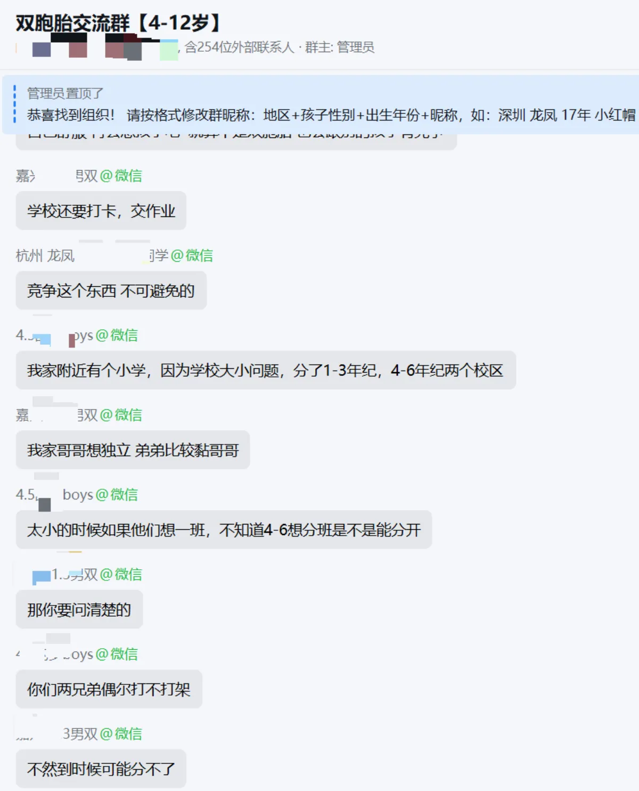

文|圆圈妈妈
前几天爬楼看到双胞胎社群，正在讨论一个老生常谈的问题：
双胞胎，到底要不要分班？
双胞胎必须分班？必须同班？吵了3年，我输给了一个佛系妈妈
双胞胎上小学要不要分班？终于有答案了...
双胞胎上学，到底该同班还是分班？
有个妈妈说，她家双胞胎本来分到了同一个班，为了把他们分开，她费尽心思走各种渠道，最后成功分班。
底下一片点赞。
“羡慕！”
“能分开太好了！”
“我们家当初就是没办法分开。”
看来，这支持双胞胎分班的家长，还真不少，理由也很真实，
比如有一对龙凤胎，一个太依赖另一个，弟弟做什么都爱瞄着姐姐。
还有一个，学习能力稍弱，自尊心却很强，两个孩子天天待在一起，难免互相比较。
家长担心，他们自己比，老师会比，同学也会比。
那种比较未必有什么恶意，但就是没营养，无意义。
所以，分开！
希望他们能各自成长，各自交朋友，各自成为自己。
还有同班，家长们也有同班的无奈。
不然....
作业要给好多个老师分别发视频，放学一个大门，一个侧门，怎么同时接？以后辅导作业、应付不同老师、处理不同同学关系……分分钟给家长整崩溃。
双胞胎分不分班，每家都有自己的理由。
有人觉得分开好，有人觉得一起好，
各取所需，无可厚非。
但有一个声音，我现在是不大赞成的：
对孩子好，就分开。家长想省心，就放一起。
这话，是不是说得太满了？
放一起，真的就省心吗？
分开，就一定对孩子好吗？
圆圈兄弟就在同一个班，
照样有不同时间下课的时候。
接送时，也经常一个出来了，另一个还没出来，我在门口等得望眼欲穿。
辅导作业更别提了，一个快一个慢，
同一道题，我讲完这个，还得再讲那个
一个已经写完出去玩了，另一个还在原地抠橡皮。
该崩溃的时候，一样崩溃。
所以，同班这件事，至少在我这里，并没有传说中那么省妈。
当然，我们没试过分班，
也不知道真分开以后，会不会反而轻松一点。
这个，我不敢说，但有一点，我很确定：
要是把圆圈兄弟拆开，对他们来说，可能才是真的苦。
这兄弟俩真的很奇葩。
见着的时候，打打杀杀，抢东西，斗嘴，互相嫌弃。
“我再也不要跟圈圈玩了！”
“妈妈，圆圆烦死了！”
可真见不着了，又开始哭天抢地：
一定要马上找到对方。
以前我还以为，他们只是无聊，就想找人玩而已。
直到有一天，圆圆跟我说：
“妈妈，我下课从来不找圈圈玩。”
我正想说，那不是挺好，各玩各的嘛。
结果他接着说：
“但是上课的时候，我一定要知道圈圈在旁边，我才放心。”
他说，每次换座位，
他总能在人群中，很快锁定圈圈在哪里，而圈圈也恰好看到了他，
就是那种两人四目相对，眼神交接，
然后两个人隔着一群路人甲乙丙丁，
先互相嫌弃地朝对方扮鬼脸，
再隔空傻笑一下。
他们4年级那会儿，有段时间，圆圆学习状态特别不好，连带影响到圈圈。
我就吓唬他——
要不就留级？或者调到其他班？
结果他天天晚上做噩梦。
睡着了，嘴里还在嚷嚷：
“不要！不要分。”
SEE。。。
我们大人讨论了半天：
分班好不好？
同班好不好？
独立性怎么办？
比较怎么办？
老师怎么办？
接送怎么办？
......
可我们讨论的，好像都是怎么好，怎么办。
却很少真正问一句：
孩子自己，到底想不想？
所以现在再有人问我：
“双胞胎到底要不要分班？”
我真的给不了答案，
每一对双胞胎都不一样。
有的孩子，分开以后如鱼得水，终于不用再被比较，
有的孩子，却像圆圆和圈圈，
平时恨不得把对方踹出地球，
可只要知道那个人就在不远处，心里就踏实了。
同班也好，分班也好，你都可以有一万个理由。
家长觉得分开，他们就会更独立。
家长觉得放一起，他们就会更方便。
这些都可能对。
也可能，只是我！们！觉！得。
真正的对孩子好，不能站在大人的角度，替孩子想象什么叫对他们好。
还得看看孩子是什么样的人，他们之间是什么样的关系？
分开以后，是不是会长得更好？
还是会把他们身上原本很珍贵的东西，一刀切掉？
至少圆圆圈圈这件事，我现在不敢动。
他们爱打架，那就继续打，
他们互相嫌弃，那就继续嫌弃，
反正每天走进教室，只要抬头一看——
哦，那个人还在。
大概，这就是他们现在最需要的安心。
至于以后会不会分班？
谁知道呢。
等他们长大一点，没准哪天自己就嫌弃对方：
“老妈，求你了，千万别把我们分一个班！”
到那时候，再说吧。
-未完待续-
双胞胎必须分班？必须同班？吵了3年，我输给了一个佛系妈妈
双胞胎上小学要不要分班？终于有答案了...
双胞胎上学，到底该同班还是分班？
